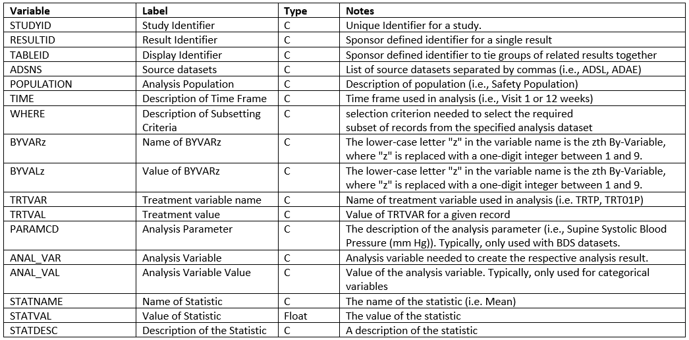
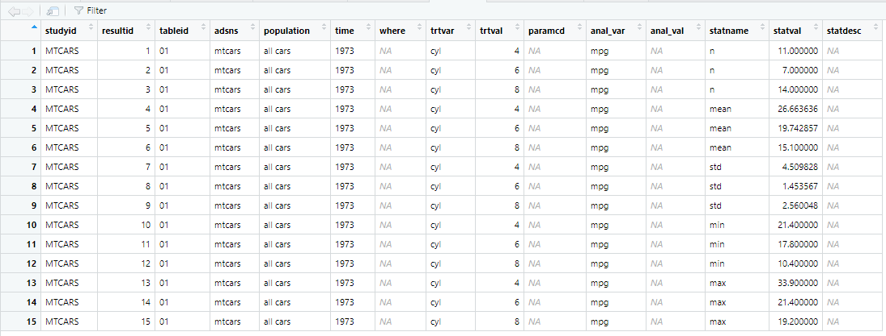

The ards package creates Analysis Results Datasets (ARDS). ARDS are used to store the results of an analysis in a tabular form, so they can be examined and manipulated by downstream processes.
An ARDS dataset is created with the following steps:
- Initialize the ARDS
- Add data to the ARDS
- Extract the completed ARDS
The above three steps are performed with the following functions:
-
init_ards(): A function to initialize the ARDS dataset. This function is typically called at the beginning of a program. -
add_ards(): A function to add data to the ARDS. This function is typically called along the way, as you create analysis data. -
get_ards(): A function to extract the ARDS dataset. This function is typically called at the end of the program.
The above steps result in an ARDS data frame. Once this data frame is extracted, you may save it to disk, or insert it into a database, as desired.
If needed, you may also convert the ARDS data structure back into a
wide-form analysis structure for reporting. See the
restore_ards() function description below.
ARDS Structure
The data structure produced by the ards package is a structure recommended by CDISC. This structure puts all analysis values into a single column. Therefore, there is one row per analysis value. Descriptive information, such as the the name of the analysis variable and the by groups, are stored in other columns.
Here is the data dictionary for the ARDS dataset: 
How to Use ards
To see how the ards functions work, let us first perform a very simple analysis on the mtcars sample data frame. Examine the following example:
library(dplyr)
library(ards)
# Initialize the ARDS
# - These values will be repeated on all rows in the ARDS dataset
init_ards(studyid = "MTCARS",
tableid = "01", adsns = "mtcars",
population = "all cars",
time = "1973")
# Perform analysis on MPG
# - Using cylinders as a by group
analdf <- mtcars |>
select(cyl, mpg) |>
group_by(cyl) |>
summarize(n = n(),
mean = mean(mpg),
std = sd(mpg),
min = min(mpg),
max = max(mpg))
# View analysis data
analdf
# cyl n mean std min max
# <dbl> <int> <dbl> <dbl> <dbl> <dbl>
# 1 4 11 26.7 4.51 21.4 33.9
# 2 6 7 19.7 1.45 17.8 21.4
# 3 8 14 15.1 2.56 10.4 19.2
# Add analysis data to ARDS
# - These values will be unique for each row in the ARDS dataset
add_ards(analdf,
statvars = c("n", "mean", "std", "min", "max"),
anal_var = "mpg", trtvar = "cyl")
# Get the ARDS
# - Remove by-variables to make the ARDS dataset easier to read
ards <- get_ards() |> select(-starts_with("by"))
# Uncomment to view ards
# View(ards)Here is an image of the ARDS dataset created above: 
Restoring an ARDS Dataset
The ARDS dataset structure is useful for storage and sharing of
analysis results. It is not so useful for reporting. Having all the
statistics in a single column actually makes reporting quite difficult.
To perform reporting, it is necessary to put the statistics back into
separate columns. This “widening” of the ARDS dataset can be performed
with the restore_ards() function.
The restore_ards() function accepts an ARDS dataset and
will return a list of transposed data frames. The list will contain one
data frame for each analysis variable. The columns for each data frame
may be different depending on which statistics were requested in the
original ARDS construction.
Let’s pick up from the last example, and just restore the result from
get_ards():
# Restore to wide format
res <- restore_ards(ards)
# View results
res
# $mpg
# cyl anal_var n mean std min max
# 1 4 mpg 11 26.66364 4.509828 21.4 33.9
# 2 6 mpg 7 19.74286 1.453567 17.8 21.4
# 3 8 mpg 14 15.10000 2.560048 10.4 19.2Notice that the analysis data has been restored, and statistics have been put back into their own columns. The data is now ready for reporting.